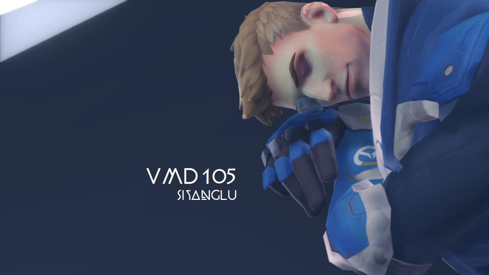

This is my InDesign Final Project.
Since my Flash job is based on the characters in OVERWATCH, I also used game elements here.
The background image was made myself on last year, and the font was from the moive, "Panther". As for the reason, well this typeface is too cool to use!